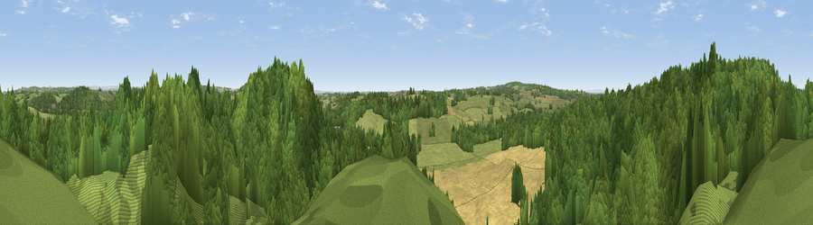

Viewpoint near Maer
#25340 in England · top 38% of its area beats it · near MaerThe view, rendered

A 360° render of this exact spot computed from the terrain model, tree cover and land cover — summer colours, afternoon light, calibrated against photographs of famous viewpoints. Real trees, hedges and buildings will differ in detail.
The panorama
Grey silhouette: terrain skyline in each direction (720 bearings, Earth curvature and refraction included). Dashed green: skyline with trees (+15 m) and buildings (+8 m) as obstacles. Blue strip: how far the ground is visible on each bearing.
Where the view opens
Wedge length = distance to the farthest visible ground on that bearing (vegetation-aware). Rings at 10, 25 and 50 km.
What fills the view
77% woodland · 12% grassland · 10% cropland
Angular shares of the visible panorama (visual magnitude), not map area. Landscape diversity 0.31 (0–1 Shannon).
Key numbers
More beautiful places nearby
The staircase of upgrades: each row has a higher view potential than everything closer. Driving times are estimates from straight-line distance, calibrated against real road routing — check an actual route before setting out.
| Place | Direction | Drive | Score |
|---|---|---|---|
| Camp Hill | NNW · 1 km | ~4 min | 61.4 |
| Viewpoint near Madeley | NNW · 5 km | ~11 min | 62.5 |
| Viewpoint near Madeley | NNW · 5 km | ~12 min | 66.7 |
| Bignall Hill | NNE · 12 km | ~23 min | 75.2 |
| Viewpoint near Mow Cop | NNE · 19 km | ~33 min | 80.2 |
| Viewpoint near Harthill | WNW · 31 km | ~49 min | 80.5 |
| Viewpoint near Little Wenlock | SSW · 34 km | ~52 min | 84.2 |
| The Wrekin | SSW · 35 km | ~53 min | 85.0 |
52.95086, -2.32330 · source: screening · position refined by local search. Computed location — check access rights before visiting.